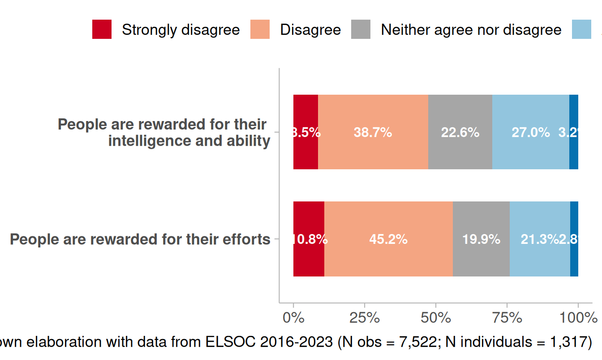
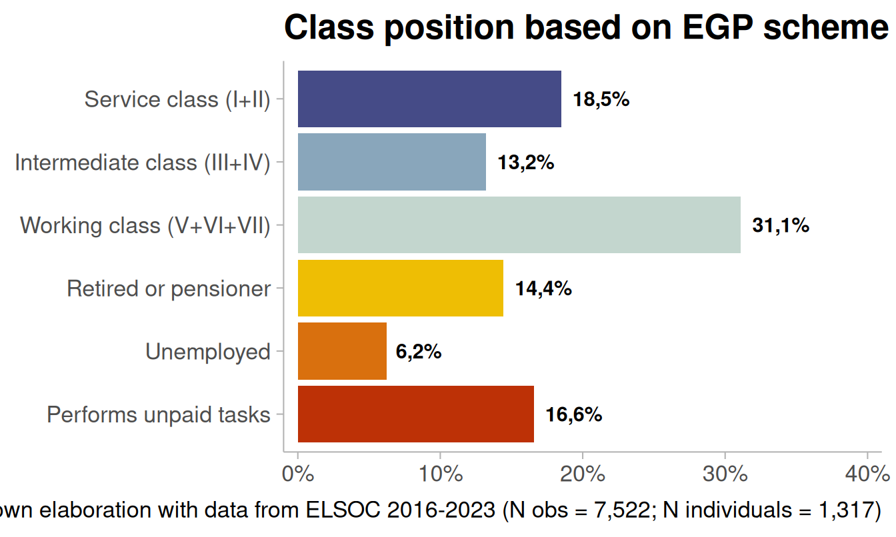

Methodology
Data
ELSOC (COES): a representative panel survey of the urban adult population in Chile, based on a probabilistic, stratified, clustered, and multistage sampling design across large and small cities
Period: six waves (2016, 2017, 2018, 2019, 2022, and 2023)
Attrition 2016→2023: ~ 40%
Analytical sample (balanced 6-wave panel):
- N = 7,522 observations (level 1) nested within
- N = 1,317 individuals (level 2)
Dependent variable
- Item: ¿“It is fair that people with higher incomes have better pensions than people with lower incomes?”
### Alluvial
#datos.pension <- df_study1 %>%
# mutate(just_pension = factor(just_pension,
# levels = c("Strongly agree",
# "Agree",
# "Neither agree nor disagree",
# "Disagree",
# "Strongly disagree"))) %>%
# group_by(idencuesta, ola) %>%
# count(just_pension) %>%
# group_by(ola) %>%
# mutate(porcentaje=n/sum(n)) %>%
# ungroup() %>%
# na.omit() %>%
# mutate(wave = case_when(ola == 1 ~ "2016",
# ola == 2 ~ "2017",
# ola == 3 ~ "2018",
# ola == 4 ~ "2019",
# ola == 5 ~ "2022",
# ola == 6 ~ "2023"),
# wave = factor(wave, levels = c("2016",
# "2017",
# "2018",
# "2019",
# "2022",
# "2023")))
#
#
#
#etiquetas.pension <- df_study1 %>%
# mutate(just_pension = factor(just_pension,
# levels = c("Strongly agree",
# "Agree",
# "Neither agree nor disagree",
# "Disagree",
# "Strongly disagree"))) %>%
# group_by(ola, just_pension) %>%
# summarise(count = n(), .groups = "drop") %>%
# group_by(ola) %>%
# mutate(porcentaje = count / sum(count)) %>%
# na.omit() %>%
# mutate(idencuesta = 1,
# wave = case_when(ola == 1 ~ "2016",
# ola == 2 ~ "2017",
# ola == 3 ~ "2018",
# ola == 4 ~ "2019",
# ola == 5 ~ "2022",
# ola == 6 ~ "2023"),
# wave = factor(wave, levels = c("2016",
# "2017",
# "2018",
# "2019",
# "2022",
# "2023")))
#
#
#datos.pension %>%
# ggplot(aes(x = wave, fill = just_pension, stratum = just_pension,
# alluvium = idencuesta, y = porcentaje)) +
# ggalluvial::geom_flow(alpha = .4) +
# ggalluvial::geom_stratum(linetype = 0) +
# scale_y_continuous(labels = scales::percent) +
# scale_fill_manual(values = #c("#0571B0","#92C5DE","#b3b3b3ff","#F4A582","#CA0020")) +
# geom_text(data = etiquetas.pension,
# aes(label = ifelse(porcentaje > 0 , #scales::percent(porcentaje, accuracy = .1),"")),
# position = position_stack(vjust = .5),
# show.legend = FALSE, fontface = "bold",
# size = 4,
# color = 'white') +
# labs(y = NULL,
# x = NULL,
# fill = NULL,
## title = "It is fair that people with higher #incomes have better #pensions than people\nwith lower #incomes?",
# caption = "Source: own elaboration with data from ELSOC 2016-2023 #(N obs = 7,522; N individuals = 1,317)") +
# theme_ggdist() +
# theme(legend.position = "top",
# plot.title = element_text(face = "bold"),
# text = element_text(size = 16))
#
knitr::include_graphics(path = ("images/dv_alluvial.png"))
Independent variables: Level 1
Attaching package: 'scales'The following object is masked from 'package:purrr':
discardThe following object is masked from 'package:readr':
col_factor
Independent variables: Level 2

- Fixed at the first wave (i.e., time-invariant) → captures average between-person differences (BE = \(\bar X_{i}\))
Estimation strategy
Cumulative link mixed models (CLMM):
Panel structure: repeated observations (level 1) nested within individuals (level 2)
Models both within-person (WE) and between-person (BE) effects; includes random effects (intercept and time slope)
WE/BE decomposition (person-mean centering) [@bell_fixed_2019]:
- Within: \(X^{WE}_{it}= X_{it}-\bar{X}_i\)
- Between: \(X^{BE}_{i}=\bar{X}_i\)
Formally:
\[\begin{aligned} \eta_{it} = \beta_{0}+ \beta_{1}\,\text{Time}_{it} +\beta_2\,\text{Meritocracy}^{WE}_{it} +\beta_3\,\text{Meritocracy}^{BE}_{i} +\beta_4\,\mathrm{Class}^{BE}_i + \end{aligned}\]
\[\beta_5\,(\mathrm{Class}^{BE}_i\!\times\! \text{Meritocracy}^{WE}_{it}) +\beta_6\,(\mathrm{Class}^{BE}_i\!\times\! \text{Meritocracy}^{BE}_{i}) +u_{0i}+u_{1i}\,\text{Time}_{it}\\\]